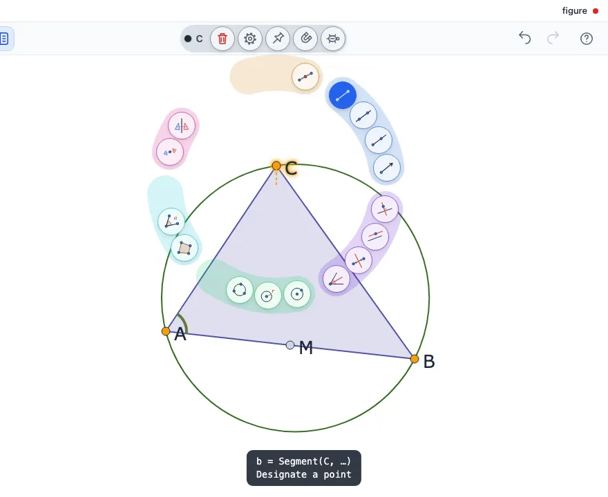

Building by gesture
Touching the figure
| Spot touched | Result |
|---|---|
| an empty spot | free point (on the floor z = 0 in 3D) |
| near a crossing | intersection of the two objects, which light up on hover (within 24 px) |
| an object | selection and ring of its tools |
| an empty spot, ring open | the ring closes, no point is created |
| an empty spot or a crossing, palette open | nothing, except with the Point tool |
| an object, palette open | selection without a ring: the palette shows its tools |
A text, an expression or a slider is only selected: they have no ring.
A line, segment, vector, circle, arc, conic or polygon that depends only on free points moves as a whole when dragged: these points are translated together.
The tool ring

The ring only shows the tools that apply to the touched object. Each tool always has the same place; a tool that does not apply leaves its place empty. Families, clockwise from the top:
| Family | Tools |
|---|---|
| Points | point on object, intersection, midpoint or center |
| Lines | segment, line, ray, vector |
| Constructions | perpendicular, parallel, perpendicular bisector, angle bisector |
| Circles | center and point, center and radius, three points, sphere (3D) |
| Polygons, angles, loci | polygon, angle, locus |
| Transformations | point and line reflections, of a point or an object (polygon, circle…) |
Hovering a tool shows in the prompt the line it will write and
the expected argument: b = Segment(C, …),
“Designate a point”. The actions on the object itself (delete,
settings…) are in the
context area
of the bar.
Designating the arguments
Once the tool is chosen, a preview of the object follows the pointer and the accepted objects light up on hover. Where a point is expected, designate an existing point, an object (a point on object is created), a crossing (an intersection is created) or an empty spot (a free point is created).
- Polygon: the vertices, then the first one again. Dragging a polygon whose vertices are free points moves it as a whole, unless it is fixed (Fixed object in the properties).
- Circle (centre and radius): in the ring, press and hold the icon and move the mouse or finger to set the radius; release to create the circle. Dragging the circle afterwards changes its radius.
- Locus: offered on a point or a line that depends on a point on object; created with one click. For a line, it draws its envelope, the curve tangent to its positions.
- Angle and angle bisector: a point of the first side, the vertex, a point of the second side.
Special cases
- Overlapping objects: a menu gives the line of each one; hovering it highlights the object. A point always wins, and a crossing directly gives the intersection.
- With a finger: during a tool, the pressed finger shows the preview without moving anything and designates on release. You can press the icon and slide to the target in a single gesture.
- Window edge: the ring shifts to fit entirely, linked to the object by a dotted line; it follows the object if the figure moves.
- Dropping a tool: Esc or the ✕ of the prompt.
- Moving: during a tool, dragging aims; the right button always moves objects and the view.
- Checking an object: a right click shows the properties of the object it points at, without dropping the tool or counting as an argument.